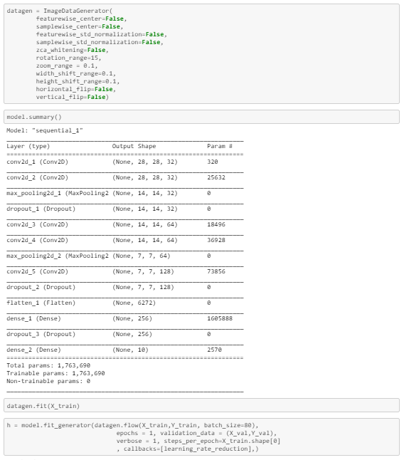

It is not easy for a machine to recognize human handwritten digits as handwritten digits are not perfect and can be made with many different flavors. In this project, my goal was to correctly identify digits from a dataset of tens of thousands of handwritten images. I had used very famous MNIST ("Modified National Institute of Standards and Technology") dataset for training the algorithm.
Training Dataset: 42K labeled images.
Testing Dataset: 28K unlabeled images.
Hardware used: GPU in Google Colaboratory.
Deep Learning Library used: Keras using Tensorflow.